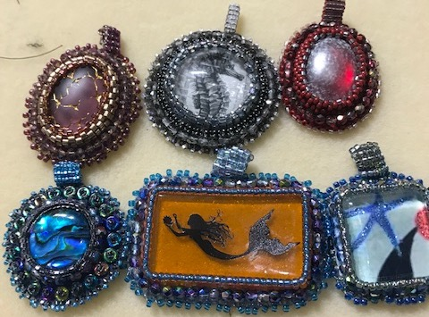

Bead embroidery
Samples of my work

There's something very satisfying about taking a cabochon—whether it's a natural stone, glass or one that I've made—beading around it and coming up with something completely different. There's also the added benefit of how relaxing it is to build something stitch-by-stich.
